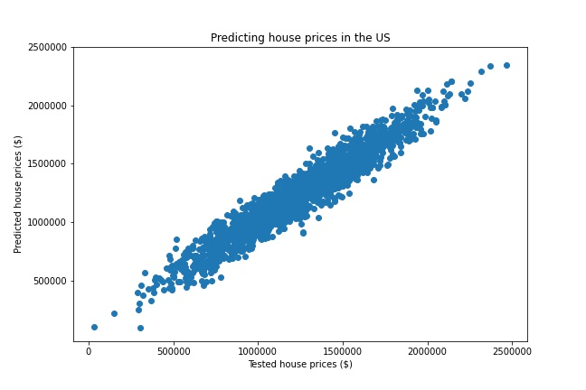

The first task was to embed two charts onto my homepage.
The second task was to replicate a chart from the FT whilst the second chart improves on the chart by the FT.
IMF lent the most, relative to World GDP, in 1984 which implies that this was the "riskiest" year.
The third task was to use to use Vega Editor to convert a CSV file into a dictonary format, and create a second chart to improve on the visual endcoding.
The visual encoding was modified from a bar chart to a line chart, as it easier to distinguish the exchange rate data points.
The fourth task was implement a data scraper of my own.
To access the code behind the scraper, click here.
The ESPN website did not prevent me from scraping data and the table included clearly demonstrated the data for my chart.
The fifth task was to use the ONS API to batch download nine different series as JSON files.
To access the python code behind these labour market charts, click here.
The sixth task was to create my own basic map and a choropleth map.
The first map shows the basic map of the provinces of China, whilst the second map shows the death rate per 100,000 and number of deaths in each state.
The seventh task was to create two charts to support or refute an argument from the Festival of Economics (Prices and wages).
One of the arguments was that wages do not need to increase with inflation since some products decrease in price.
The statement is true that wages have not been growing at a similar rate to inflation - inflation is so high that real wage growth is negative. Wages do not necessarily need to increase with inflation given that some essential goods have been decreasing in price.
The eighth task was to create two charts that uses advanced analytics.
I merged two data sets and to access the code behind this click here.
I merged three data sets and to access the code behind this click here.
The ninth task was to create a chart using unsupervised learning.
I wanted to use the longitudinal and latitudinal bearing of each country and cluster them into their respective continents using a centroid.
As expected, there is an overlap in continents as the centroids disregard vital information such as the location of capital cities.
To access the code behind this click here.
The tenth task was to create a chart using supervised learning.
I wanted to fit a regression on variables that determine the house price in the US and see how good the regression is at estimating house prices. Source: Kaggle
The introduction of new data points to the regression model showed that the predicted house prices are very similar to the actual (tested) house prices. Hence this model is good at predicting house prices.
To access the code behind this click here.